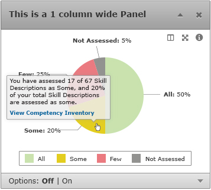

These elements alter page content when users interact with them.
Tooltips are a quick way to provide extended information on an item or action on a page. The user may hover over an item or clicking on the item, and a tooltip may appear as a small "hover box" with information about the item being hovered over.
Tooltips displayed in breadcrumbs have a dark background with white text over them. This is to give contrast and help make the tooltip stand out from the content in the background.
Refer to the Dashboard page for more details about the specific items displayed on that page.
Tooltips displayed on the Dashboard page have a lighter background than the tooltips on breadcrumbs and other areas. This is to help convey to the user that there is more information for the user to follow.
See the tooltip demo page to see how it's implemented in jQuery UI.